Stages 1–10
Stages 1–10 Stages 11–20
Stages 11–20 Stages 21–30
Stages 21–30 Stages 31–40
Stages 31–40 Stages 41–50
Stages 41–50 Stages 51–60
Stages 51–60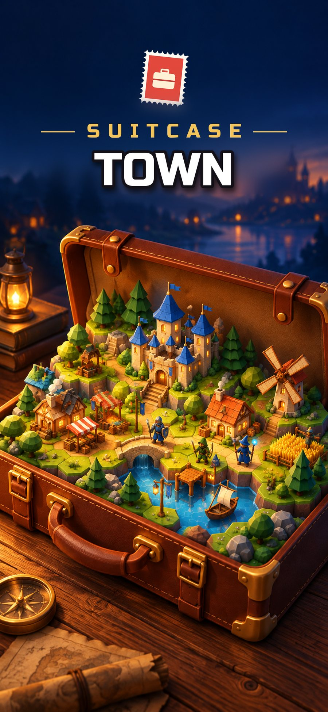
NEW: SEASONS 3, 4 & 5 · iPhone
Grow a town in your suitcase, collect heroes and save the world one suitcase at a time!
Odo the wandering inventor kept whole lands safe inside his suitcases… until the Shadow Emperor came. Now he has just one old leather suitcase. And you.
VERSION 1.1 · OUT NOW
Odo's journey just got three seasons longer! The Dream Suitcases, the Deep Suitcases and the Star Suitcases are waiting for you.
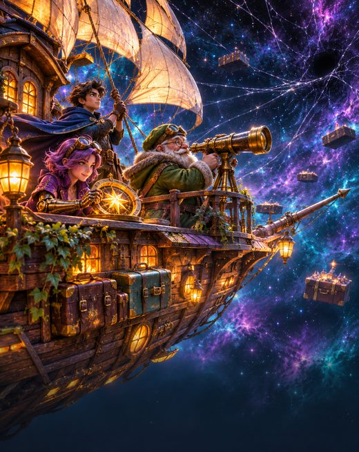
Every suitcase is a new region with its own enemy army and its own boss.
Season 1 · The Shadow Emperor
Stages 1–10Stages 11–20Stages 21–30Stages 31–40Stages 41–50Stages 51–60Season 2 · The Dark Suitcases
 Stages 61–70
Stages 61–70 Stages 71–80
Stages 71–80 Stages 81–90
Stages 81–90 Stages 91–100
Stages 91–100 Stages 101–110
Stages 101–110 Stages 111–120
Stages 111–120Season 3 · The Dream Suitcases
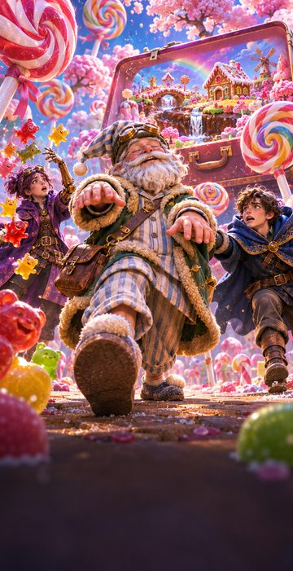
Stages 121–130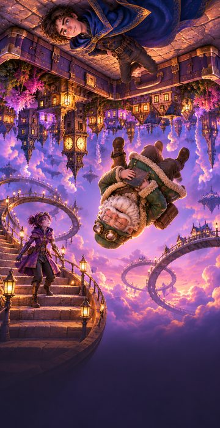
Stages 131–140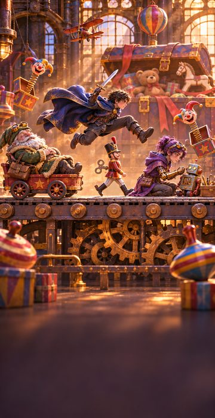
Stages 141–150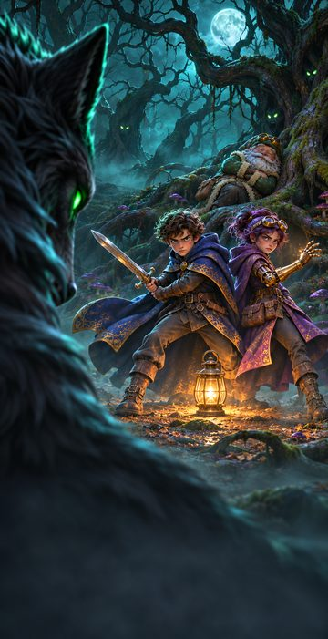
Stages 161–170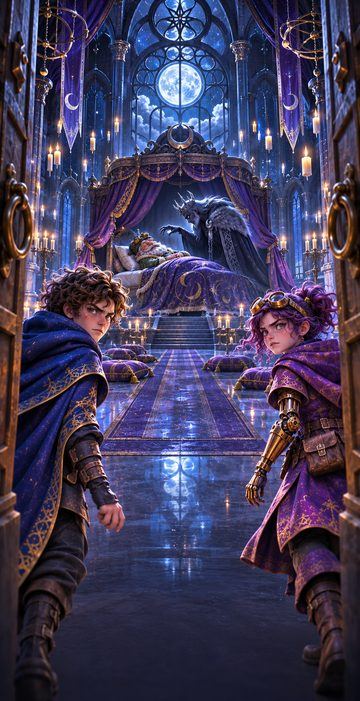
Stages 171–180Season 4 · The Deep Suitcases
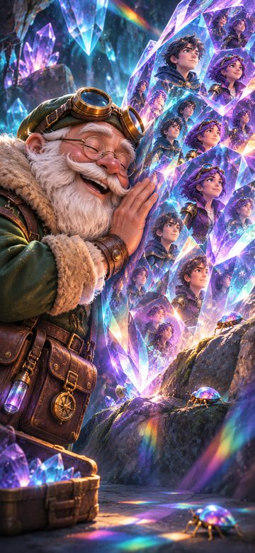
Stages 181–190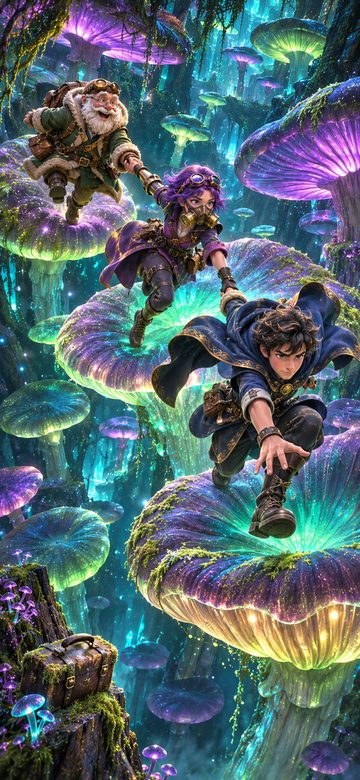
Stages 191–200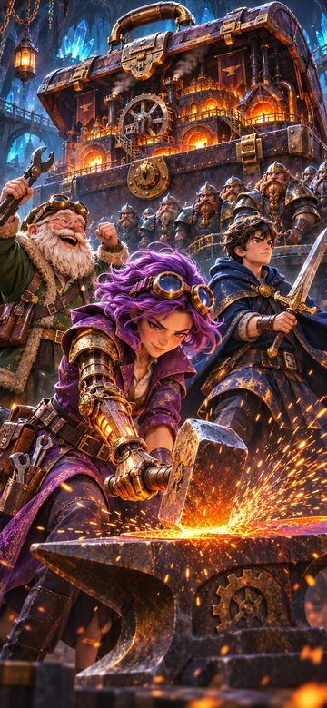
Stages 201–210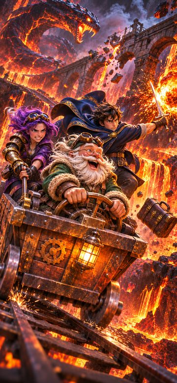
Stages 211–220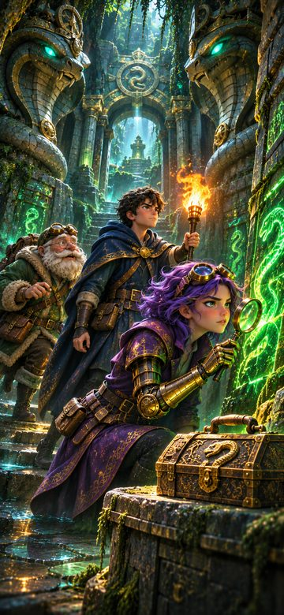
Stages 221–230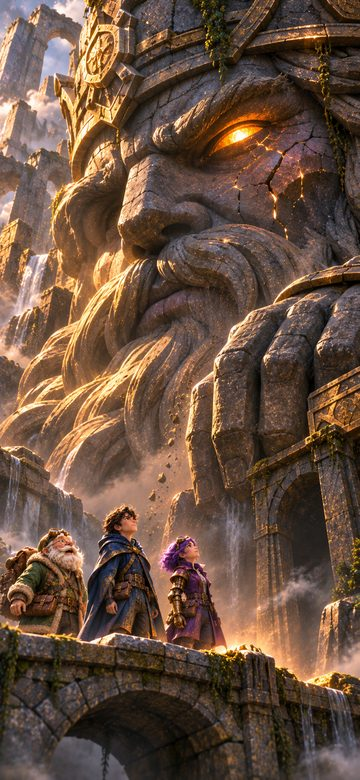
Stages 231–240Season 5 · The Star Suitcases
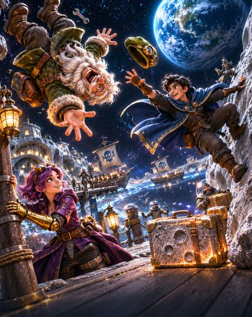
Stages 241–250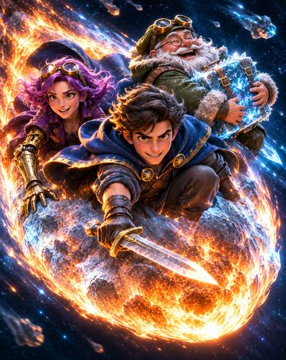
Stages 251–260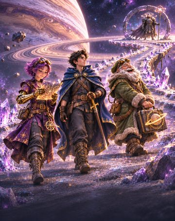
Stages 261–270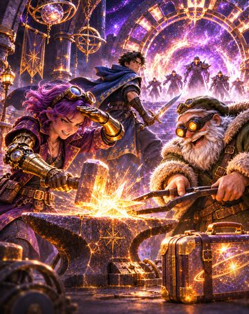
Stages 271–280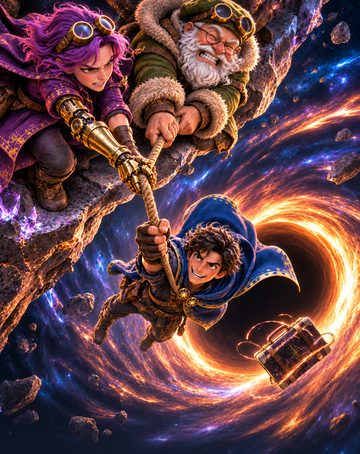
Stages 281–290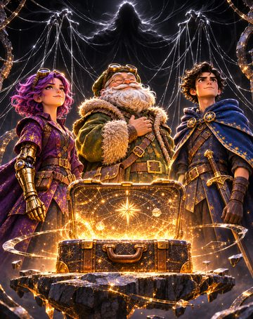
Stages 291–300From the current version of the game. Use the arrows or swipe.


Great for a quick session on the go, and for a long adventure.
Captain's Manor, Blacksmith, Academy, Enchanter, Harbor… Every building unlocks something new and a permanent team bonus.
Six rarities from Common to Mythic. Rare heroes have signature skills that awaken and grow stronger at 5 stars.
Formation, class advantage and the right target. From Season 2 on, every suitcase has its own rule, and each of the 30 bosses a trick of its own.
Put a Sun, Night, Storm or Nature enchantment on your gear. A team sharing an enchantment grows stronger together.
A 100-floor tower that resets every week, the 30-floor Challenge and a Season League that starts over every 4 weeks. All on Game Center leaderboards.
Win heroes available only in events, and beat the bosses of the suitcases you rescued every week to earn stamps.


From the fairy chimneys to the Black Hole, 30 suitcases: a boss awaits you at every stop.
Season 1


Season 2 · The Dark Suitcases


Season 3 · The Dream Suitcases
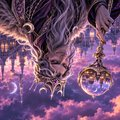
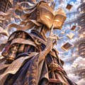
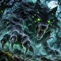
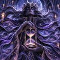
Season 4 · The Deep Suitcases
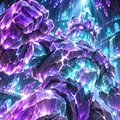
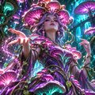
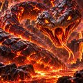
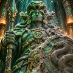
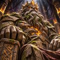
Season 5 · The Star Suitcases
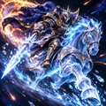
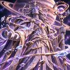
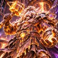
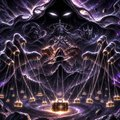
Found a problem or have an idea? Write to us: bavulkasabasi@gmail.com. Please include the game version (Settings → About) and your phone model.
If iCloud is on, your save is backed up to your own iCloud account. Open the game with the same Apple ID and a "Save Found" window lets you continue. The bottom of the Settings screen shows whether the backup is on.
Replay earlier stages, level up your heroes, upgrade your gear and adjust your formation (mages and archers in the back). The Academy, Workshop, Expedition and events also give gold. The "Next" strip on the home screen tells you what to do.
Rarity: 1 gem is Common, 6 gems is Mythic. Tap the rarity tag on a hero to open the Rarity Guide.
Each season is 60 stages long. Defeat its last boss and the story takes you on to the next season (stages 60, 120, 180 and 240). If you had travelled the Endless Road, the update moves you to the start of the new season and pays the road you covered back in stamps. You can always return to rescued suitcases from Odo's Map.
Settings → Delete account and data. Your local save, your iCloud backup, your anonymous player ID and your usage data are deleted. Details: Privacy Policy.